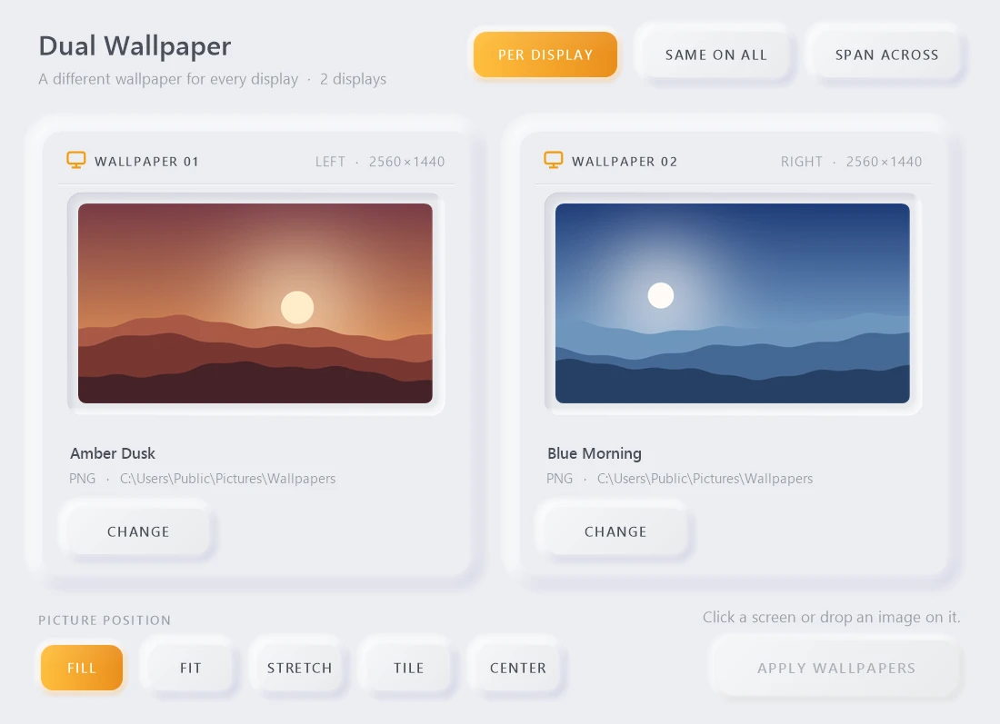

Dual Wallpaper
A different wallpaper on every monitor — or one image on all, or spanned across.


Pick a different image for each screen. Left and right are detected from how your monitors are arranged.
- Three modes: per display, same on all, span across
- Fill, Fit, Stretch, Tile or Center
- Click or drag & drop an image onto a screen
- Follows your Windows light / dark setting
- Works with 1, 2, 3 or more monitors
- Single portable .exe — copy it to any PC
Browser or Windows warning? Here's what to click.
Verify the download (SHA-256)
052EF9118CF12EC91DCE9071B8E9ECBF26F999B18371FDF8688AAA798C92F775
In PowerShell: Get-FileHash "Dual Wallpaper Soft.exe"
Good to know
Will my wallpapers stay if I move the images?
Windows reads wallpapers from where the image files are. Keep them in a permanent folder like Pictures so they don't disappear.
Which images work best for Span across?
Wide images. Two side-by-side monitors form a very wide area, so a normal 16:9 picture gets its top and bottom cropped. Something around 5120 × 1440 fits two 2560 × 1440 screens exactly.
What happens to my wallpapers if I delete the app?
They stay exactly as they are — the app only changes Windows' wallpaper setting when you press Apply wallpapers.